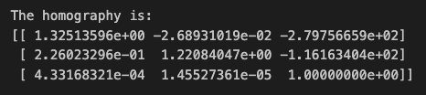
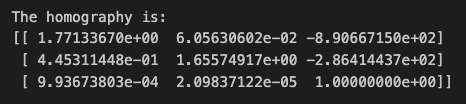
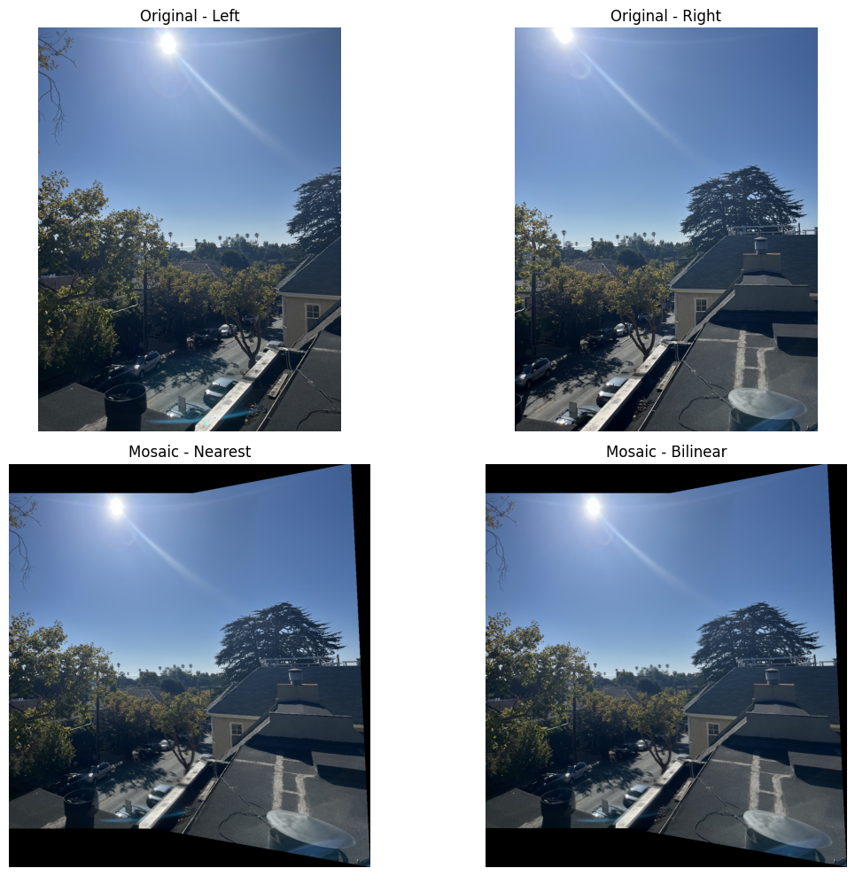
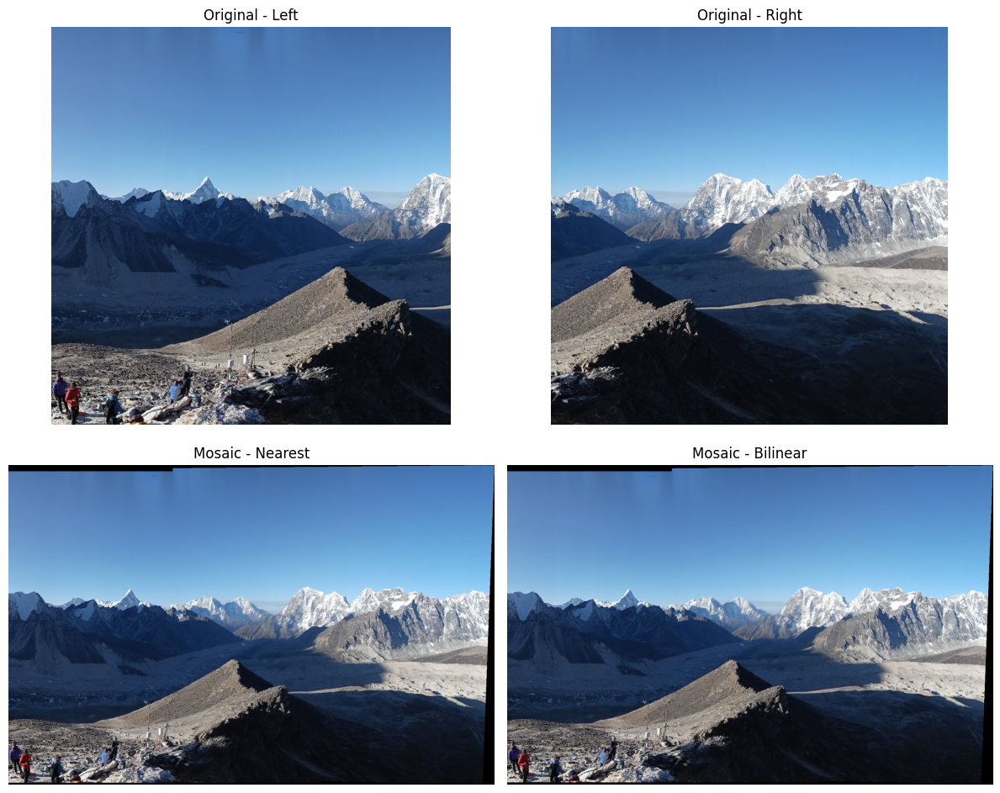
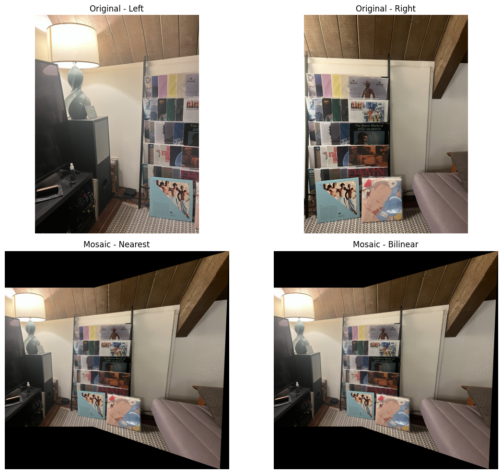
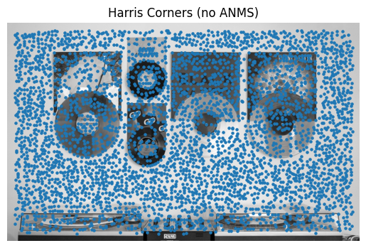
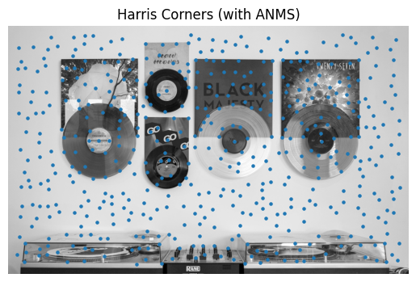

← Back
CS 180 Project 3A
Image Warping and Mosaicing
A.1: Shoot the Pictures
I captured multiple sets of photographs with projective transformations by fixing the center of project (COP) and rotating the camera while capturing photos.
A.2: Recover Homographies
I implemented the computeH(im1_pts, im2_pts) functions to calculate the homography from the first image to the second


The system of equations is Ah = b
For each pair of correspondences (x, y) -> (x', y'):
x' = (h0x + h1y + h2) / (h6x + h7y + 1)
y' = (h3x + h4y + h5) / (h6x + h7y + 1)
This sets up a linear system of n equations, where n >= 8. I then solved it using least-squares.
A.3: Warp the Images
I implemented the warpImageNearestNeighbor(im,H) and warpImageBilinear(im,H) using inverse warping. To test the code, I applied it to 2 images for rectification.
Nearest Neighbor is fast but produces blocky or jagged results. Bilinear interpolation yields a smoother and more realistic transition but is slower.
A.4: Blend the Images into a Mosaic
Using the functions implemented above, I was able to create the following mosaics.



I created three image mosaics by selecting corresponding points between overlapping images, computing homographies, and warping both images onto a shared canvas. Each image was inverse-warped using both nearest-neighbor and bilinear interpolation, with bilinear interpolation producing smoother transitions. To reduce visible seams, I applied simple feathering - generating soft alpha masks and blending overlapping regions through weighted averaging. This approach helps minimize edge artifacts and ensures a more seamless, natural-looking mosaic.
Feature Matching for Autostitching
B.1: Harris Corner Detection
Harris corners are visualized on the images, both before and after applying ANMS.

